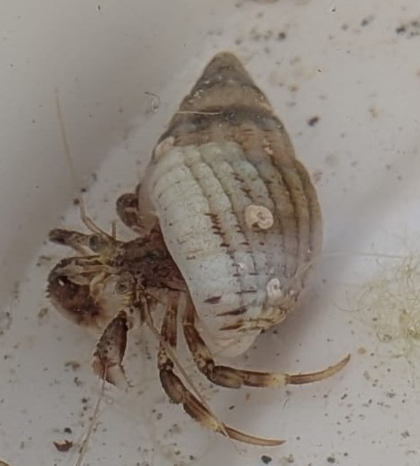

Pagure commun
Pagurus bernhardus
Le pagure commun est un bernard-l'ermite très répandu sur les côtes de l'Atlantique Nord-Est. Il protège son abdomen mou dans une coquille de gastéropode qu'il change au cours de sa croissance.
Informations scientifiques
| Nom scientifique | Pagurus bernhardus |
|---|---|
| Nom commun | Pagure commun |
| Famille | Paguridae |
| Infra-ordre | Anomura |
| Ordre | Decapoda |
| Classe | Malacostraca |
| Habitat | Fonds rocheux, sableux et vaseux, herbiers et estran |
| Répartition | Atlantique Nord-Est, de la Norvège au Portugal, Mer du Nord et Manche |
| Longueur | Environ 3 à 8 cm |
| Alimentation | Débris animaux et végétaux, charognes et matières organiques |
Description
Le pagure commun possède un abdomen mou et asymétrique qui ne peut pas
rester exposé. Pour se protéger, il utilise généralement une coquille
vide de gastéropode dans laquelle il peut entièrement ou presque
entièrement rentrer.
Son corps est généralement orange à rouge, avec des taches grises ou
vertes. Ses pinces sont jaune-vert et mouchetées de rouge. La pince
droite est nettement plus grosse que la gauche.
Il peut vivre sur différents types de fonds, notamment les rochers,
les cailloux, le sable, la vase et les herbiers. Il est présent depuis
la zone intertidale jusqu'à plusieurs centaines de mètres de profondeur.
Le pagure commun est principalement détritivore. Il consomme notamment
des débris d'origine animale ou végétale. Il peut également être
charognard.
Au cours de sa croissance, il doit régulièrement trouver une coquille
plus grande. Des organismes comme des hydraires ou des anémones peuvent
également vivre sur sa coquille, notamment Calliactis parasitica.